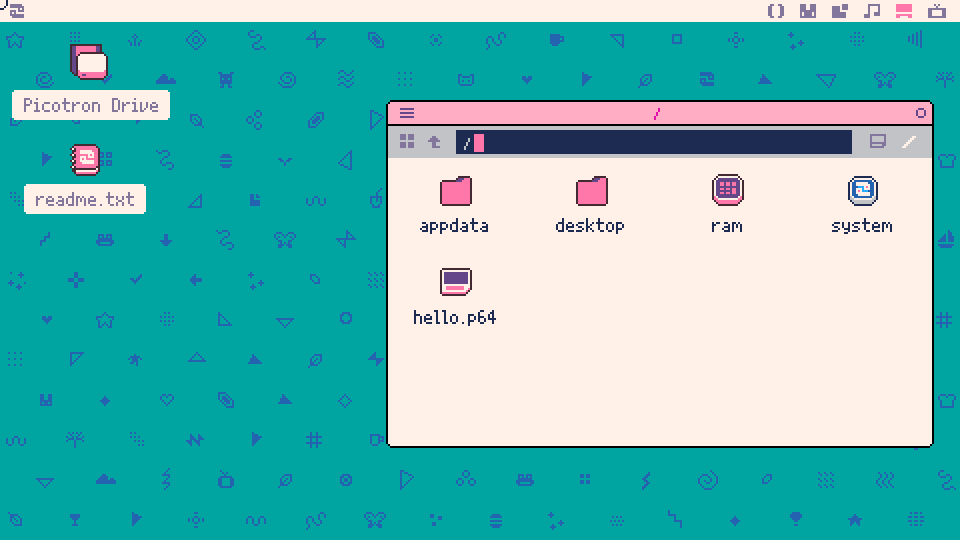
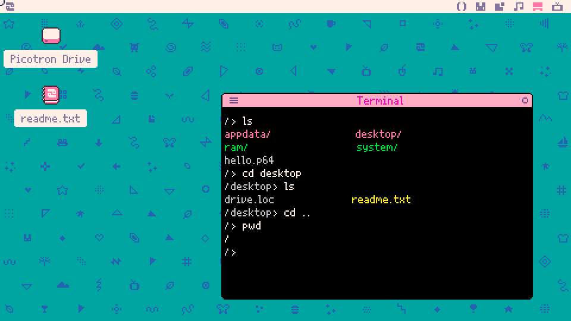
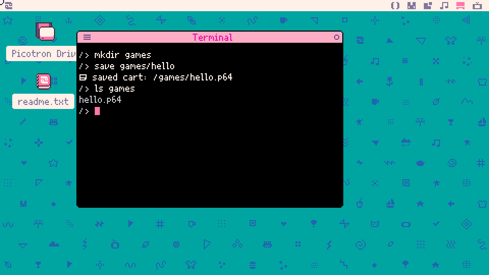
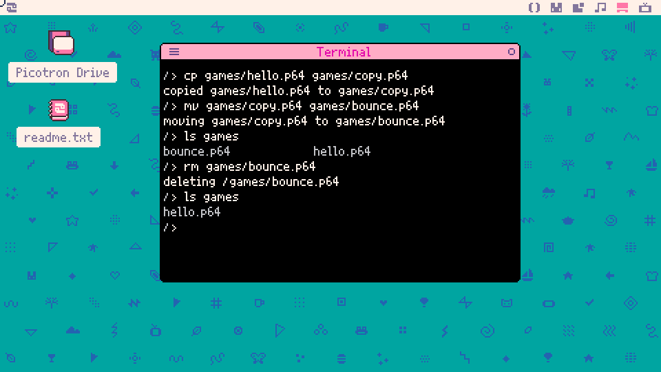
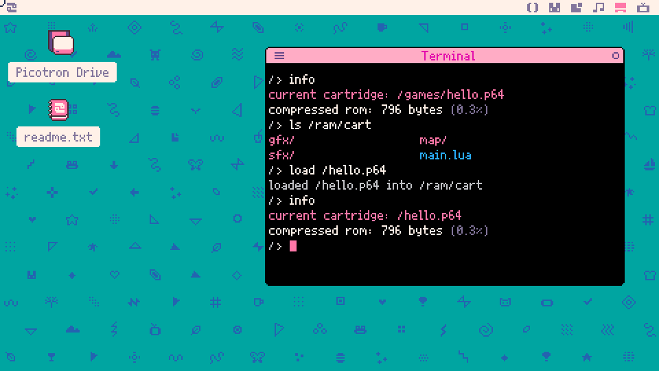
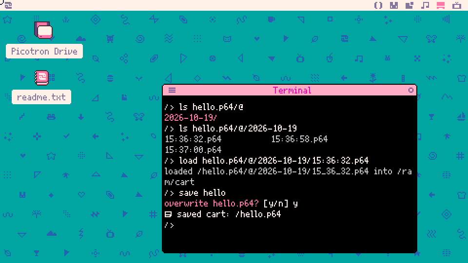
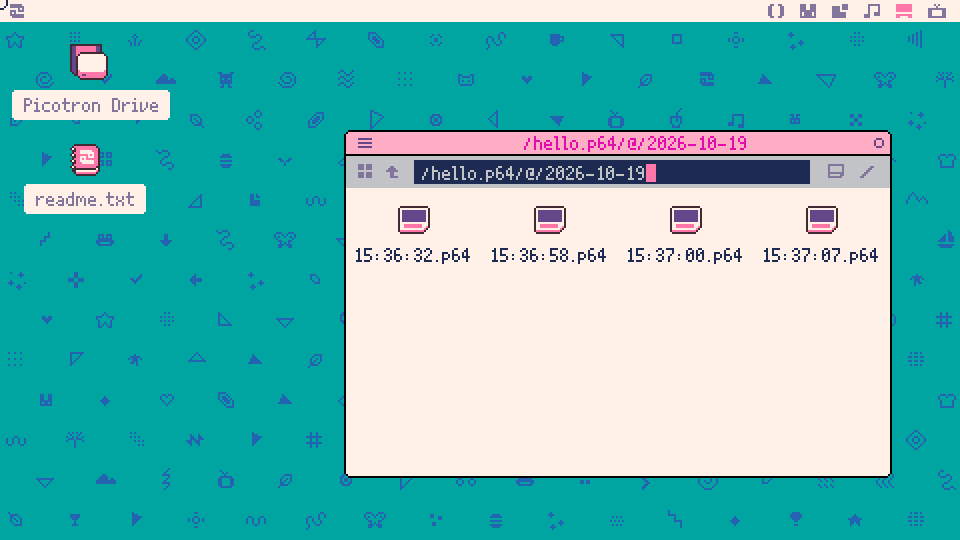

demotron / beginner basics / 01
Files and the terminal
Picotron's own drive, and the terminal commands for finding, making, saving and loading things on it.
The drive
In Getting Started we typed save hello, and Picotron answered saved cart: /hello.p64. Saved it where? This lesson answers that. We look around Picotron's drive, move about it from the terminal, make folders and tidy files, see what save and load really do, get old versions back, and find the drive on the real computer.
Picotron keeps its files on a drive of its own, laid out in folders like the files on any computer. The easiest way to look at it is the file browser. On the desktop, double-click the Picotron Drive icon:

This is the top of the drive, a folder called simply /. Our hello.p64 from Getting Started is there, next to four folders that come with every Picotron:
- desktop holds everything on the desktop. The Picotron Drive icon we just double-clicked lives in here (it's a small shortcut file called
drive.loc), and so doesreadme.txt. - ram is Picotron's memory. The important thing in it is
/ram/cart, the working cartridge from Getting Started: the code being edited right now. Nothing in/ramis written to disk, which is the reason saving matters. More on that below. - system is Picotron itself: its editors, its file browser, its terminal commands. Looking around in there is fine, but Picotron doesn't keep changes made to
/system, so our own work goes somewhere else. - appdata is where programs keep their own files, such as settings and high scores.
ram and system have their own icons because they aren't ordinary folders on disk; the terminal colours them differently too.
Double-clicking a folder opens it. Double-clicking a .p64 file is different: it runs the cartridge. To work on a cartridge we load it, which comes up shortly.
The terminal
The file browser is good for looking. The terminal does the same things by typing, and once the handful of commands below are familiar I find it quicker for everything else. Open it (Escape from the desktop, or click the TV icon) and try these. Here's what they print in a Picotron that has only Getting Started's hello saved:

Every line we type starts after />. That's the prompt, and the part before the > is always the folder we're in. Right now that's /, the top of the drive.
lslists what's in the current folder. Folders end in/and show up pink;ramandsystemare green, because they're special. Files are coloured by type:.txtfiles are yellow,.luafiles blue, and cartridges likehello.p64plain grey.cd desktopchanges directory ("directory" is another word for folder) intodesktop. It prints nothing, but the next prompt says/desktop>.cd ..goes back up one level. Two dots always mean "the folder above this one".pwdprints the working directory, the folder we're in. The prompt already shows it, but the command is worth knowing by name.
There are two ways to name a place. cd desktop means "the folder called desktop in here", so it only works from a folder that has a desktop inside it. cd /desktop, starting with a slash, means "start from the very top", so it works from anywhere. Every name we give a command works this way, folder or file.
Two keys save a lot of typing. Tab finishes a file or folder name once the first few letters are typed, and the Up arrow brings back earlier commands.
Managing files
Keeping each project in a folder of its own stops the top of the drive from filling up with cartridges. Here's a games folder, with a copy of hello saved into it:

mkdir games makes a directory. Then save games/hello saves the working cartridge inside it: the name games/hello means "hello, in the games folder", and Picotron adds the .p64 on the end. ls games lists what's in a folder without going into it.
One catch: after a save with a name, that's the cartridge we're working on. Ctrl + S now saves to /games/hello.p64, not to the /hello.p64 we started with. The next section explains why.
Next, copying, renaming and deleting:

cp games/hello.p64 games/copy.p64copies the first thing to the second name.cpwon't copy over a cartridge or folder that's already there (it says how to, if you really mean it), and for any other file it asks before writing over it.mv games/copy.p64 games/bounce.p64moves it. Moving to a new name in the same folder is how we rename something. Likecp,mvwon't move over an existing cartridge or folder, but it will replace an ordinary file of the same name without asking, so check first.rm games/bounce.p64removes it.rmdoesn't ask "are you sure?" either, and given a folder it removes the folder and everything inside it. Read anrmcommand twice before you press Enter.
(A cartridge deleted by mistake isn't gone for good: Anywhen, further down this page, still has every version of it that was saved.)
The working cartridge
The working cartridge explains how saving and loading really work.
The cartridge being edited is a folder in memory, /ram/cart. Typing in the code editor or drawing in the sprite editor changes the files in /ram/cart, and Ctrl + R runs whatever is in there. That's why there's no need to save before pressing Ctrl + R. But memory isn't kept when Picotron shuts down, so until we save, the work exists only in /ram/cart.
So save and load are just copying:
save hellocopies/ram/cartout tohello.p64on the drive, and from then on, Ctrl + S copies it there again.load hellocopieshello.p64in, replacing everything in/ram/cart. If there are changes that haven't been saved,loadasksdiscard unsaved changes? [y/n]first, which is the chance to say no and save them.
To check which cartridge we're working on, info says:

The first info says we're working on /games/hello.p64, from the last section. compressed rom is how big the cartridge is once it's packed up: a cartridge shared as a .p64.png picture can hold up to 256k of it, and the percentage is how much of that this one uses. When there are unsaved changes, info says so on an extra line.
ls /ram/cart shows what a cartridge really is: main.lua, where the code goes, and the folders gfx, map and sfx, for sprites, maps and sounds.
Then load /hello.p64 brings the original back into /ram/cart, and the second info agrees that /hello.p64 is now the working cartridge, so Ctrl + S saves there again.
Anywhen
Every time Picotron writes a change to a file on its drive, it keeps a record of that version. The feature is called Anywhen (most computers don't have one), and it makes a saved cartridge very hard to lose for good.
Say we changed hello's circle to red and pressed Ctrl + S, then changed the message and pressed Ctrl + S again, and now we want the original back. Adding /@ to the end of a file's name looks into its past:

ls hello.p64/@lists the days the file changed. We only made changes today, so there's one day folder.- Inside a day folder there's one cartridge for every moment it was saved, named by the time. Times are in GMT, so they might not match your clock, and your dates and times will be different from these.
loadworks on any of them, just like on a normal cartridge. Picotron writes the time with_instead of:in its reply; both work in these names. Here the earliest one is the original, from before either change.- Finally
save helloputs it back ashello.p64. Picotron asksoverwrite hello.p64?, and we answery.
That last step has to be save hello, not Ctrl + S. Right after loading an old version, the working cartridge is that old version (try info), so Ctrl + S doesn't copy it back into hello.p64.
The file browser shows the same history: type open hello.p64/@ and open a day. There's an extra version at the end, because saving the old one back was recorded too. Even an undo can be undone.

Anywhen records the files Picotron writes to its drive, but not anything in /ram, so it only knows about saved work. It also remembers files that have since been removed: ls with /@ still works on the name of a cartridge deleted with rm. Anywhen can be switched off in Picotron's settings, but it's on unless you change it.
One quirk: in the very first session after installing Picotron, Anywhen doesn't record anything yet. If ls hello.p64/@ comes back empty, restart Picotron and save again; it records from then on.
The drive on your computer
Picotron's drive is a real folder on your real computer, and getting at it from outside Picotron is how we back up our work or send a cartridge to a friend. Type this in the terminal:
folderYour computer's own file manager opens on the folder you're in. Nothing appears in Picotron itself, which is why there's no screenshot here: the window opens on your real desktop. folder / opens the top of the whole drive.
Unless it's been set up differently, the drive is the folder called drive inside Picotron's own folder, which is here:
- Windows:
C:/Users/Yourname/AppData/Roaming/Picotron - Mac:
/Users/Yourname/Library/Application Support/Picotron - Linux:
~/.lexaloffle/Picotron
On your computer, each .p64 cartridge is a single file. Copying it somewhere safe backs it up, and a friend can copy it into their own drive folder and load it.
Files from code
Everything we've done with commands, programs can do too. ls is itself a small Lua program, /system/util/ls.lua, and the heart of it is a function called ls(). Here's a tiny program that uses it:
1function _draw()
2 cls(1)
3 print("inside /system:", 20, 16, 7)
4 local y = 36
5 for name in all(ls("/system")) do
6 print(name, 20, y, 12)
7 y += 10
8 end
9endls("/system") hands back a list of the names in /system, and the for ... in all(...) line prints them one under another. (Lists and loops get lessons of their own; here the point is only that code can reach the drive.) It lists /system because that folder is the same everywhere, including the copy of Picotron running in this page:
Putting it together
In this lesson we added:
- the drive's top-level folders:
desktop,ram,systemandappdata ls,cd,cd ..andpwd, and names with and without a leading/mkdir,cp,mvandrm(which never asks)save,loadandinfo, and what each does to/ram/cart- Anywhen's
/@for getting old versions back folder, for the drive on your real computerls(), the same listing from code
Next, Basics 2 starts on the code itself: the functions Picotron calls over and over to make a game move.
Try this
- Make a small change to hello, then
cd gamesandsave hellothere. Go back up withcd ..and typeload hello. Before you press Enter, predict which of your two hellos you'll get, then check withinfo. - At the very top of the drive, what do
cd ..andcd /do? Make a prediction for each, then try them and watch the prompt. - Change hello, press Ctrl + S, then use Anywhen to bring back the version from just before that change. How can you tell which moment is the one you want before you load it?
- Change the program above to list
/system/utiland find the programs behind the commands you've used in this lesson. One of them isn't there. Which, and why might that be? While you're exploring, tryfolderfrom inside/ram/cartand see what Picotron says.
Built with Picotron 0.3.0d.